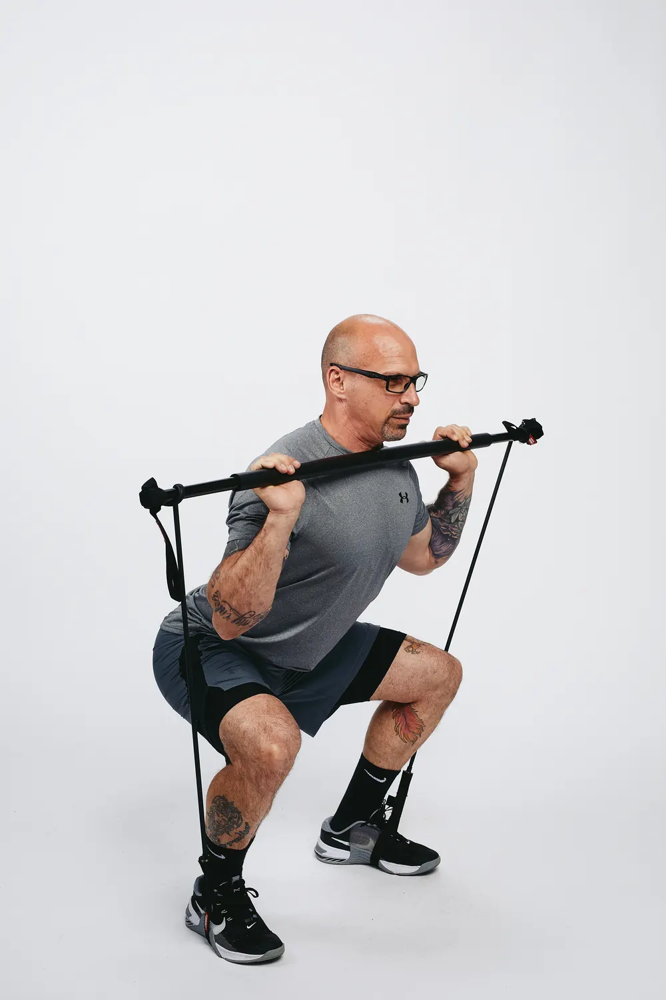
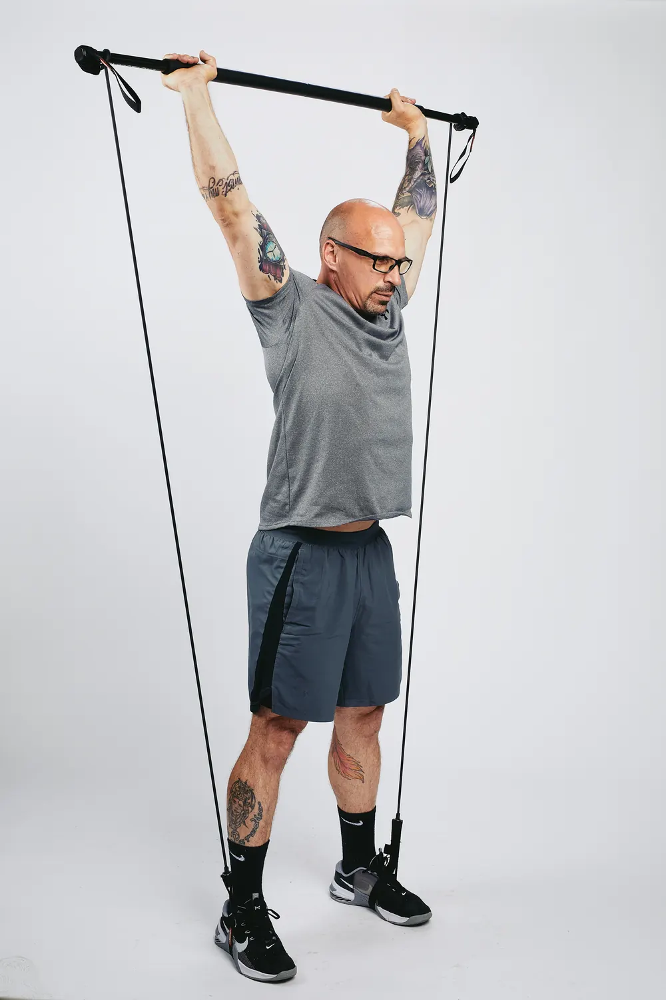
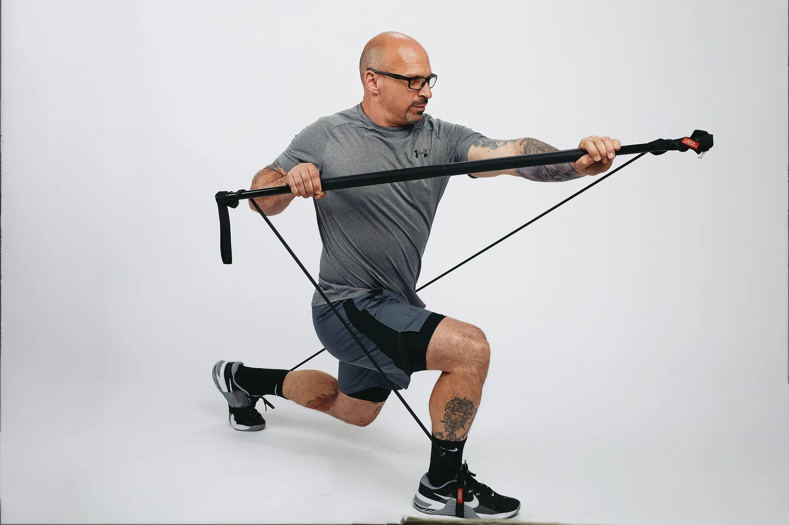
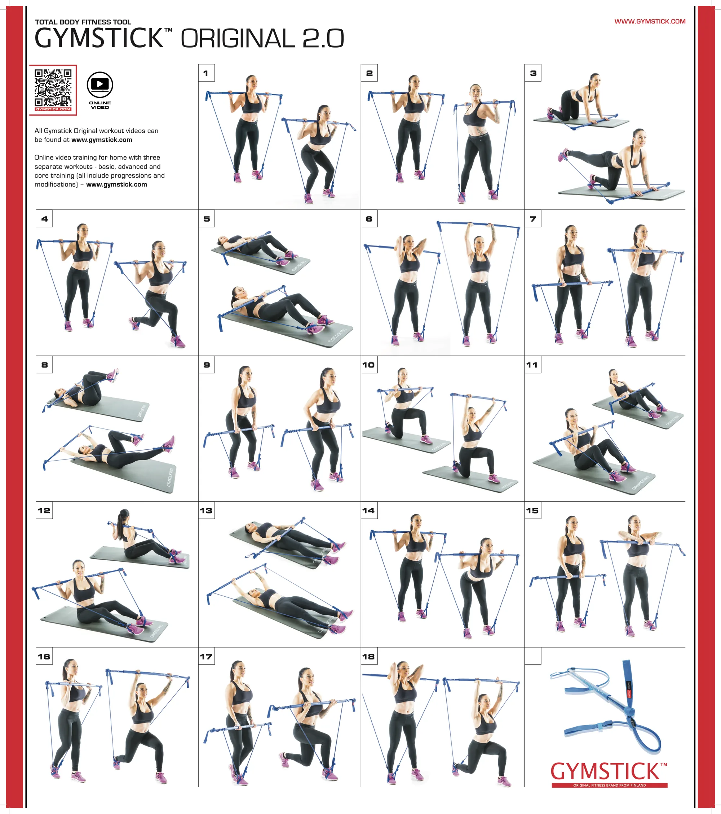
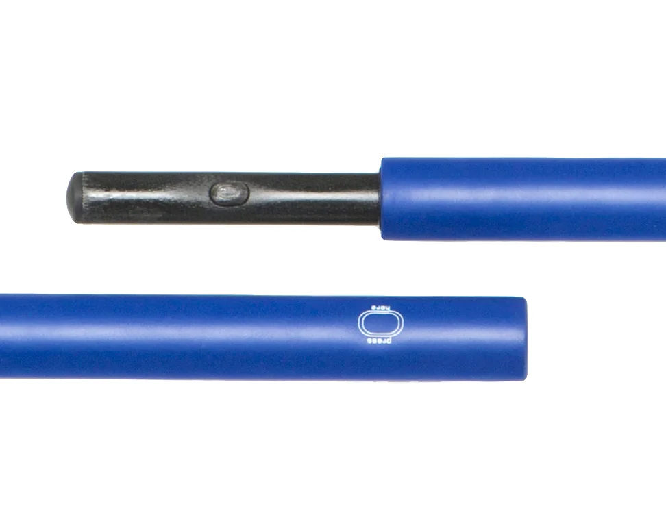
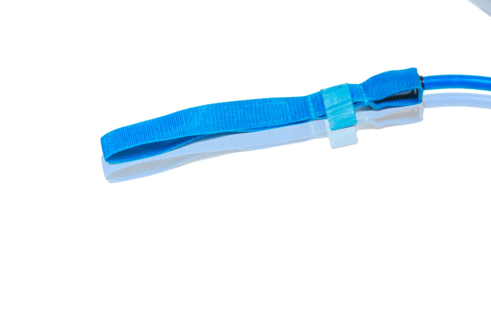
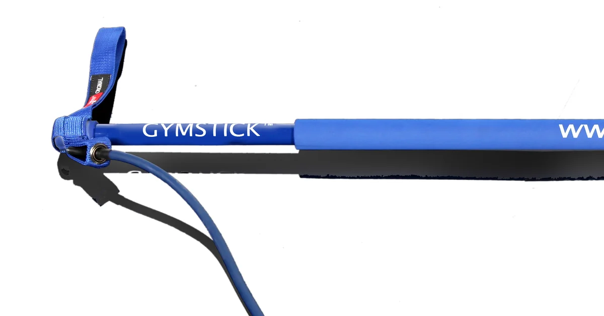
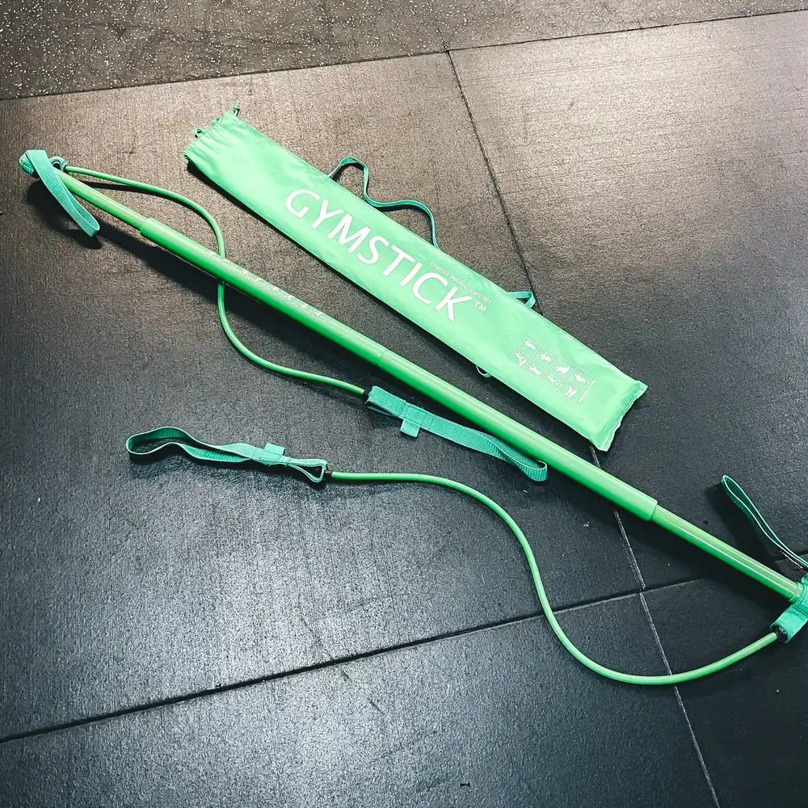
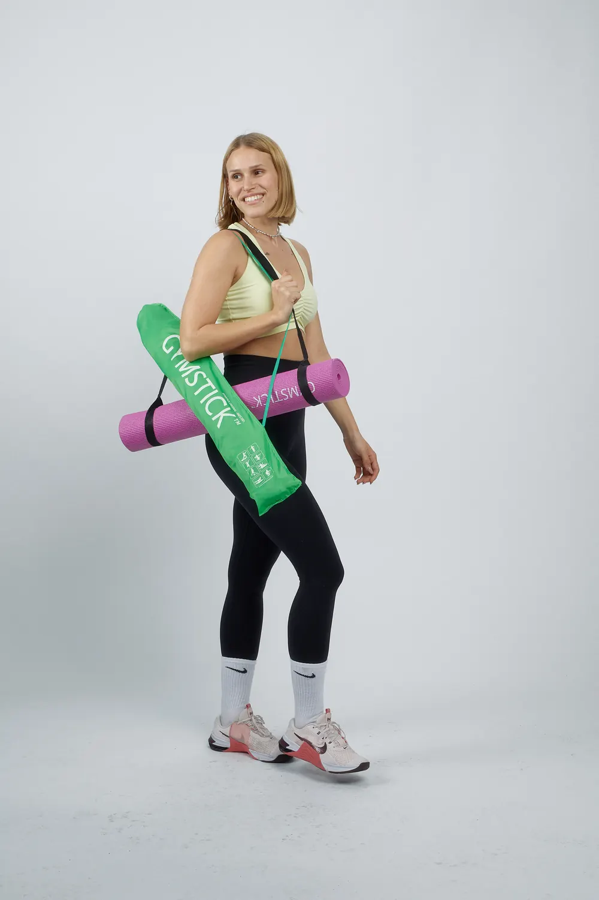

מה אפשר לעשות עם Gymstick?
שלושה תרגילי כוח לחיזוק כל הגוף.

לחיצת כתפיים

מכרע עם סיבוב
צפו בתרגיל מכל זווית
בחרו תרגיל וגררו את הדמות כדי לסובב אותה. אפשר להאט את ההדגמה.
הדמות והתנועות הן הדגמה ראשונית. לפני פרסום צריך אישור של מאמן על הדיוק של כל תנועה.
סרטוני אימון עם Gymstick
חימום, שלושה אימונים מלאים ומתיחות, שתוכלו לבצע לצד הסרטון.
-
 סרטון, משך 4:56
חימום
סרטון, משך 4:56
חימום
-
 סרטון, משך 27:37
אימון 1
סרטון, משך 27:37
אימון 1
-
 סרטון, משך 14:34
אימון 2
סרטון, משך 14:34
אימון 2
-
 סרטון, משך 16:54
אימון 3
סרטון, משך 16:54
אימון 3
-
 סרטון, משך 4:52
מתיחות
סרטון, משך 4:52
מתיחות
הסרטונים מוצגים מיוטיוב. לפני פרסום כדאי לוודא מול Gymstick הבינלאומית שמותר להציג אותם באתר. כשפותחים את העמוד ישירות מהקובץ, הסרטון נפתח ביוטיוב ולא בתוך העמוד.
הדגמות לפי תרגיל
רוצים לבדוק איך מבצעים תרגיל מסוים? כאן תמצאו 18 הדגמות קצרות, לפי אזור בגוף.
מוצגות 18 הדגמות
-
 סרטון, משך 0:27
גשר ופשיטת ירך
Bridge and Hip Extension
סרטון, משך 0:27
גשר ופשיטת ירך
Bridge and Hip Extension
-
 סרטון, משך 0:27
פשיטה וכפיפה של הברך
Leg Extension and Curl
סרטון, משך 0:27
פשיטה וכפיפה של הברך
Leg Extension and Curl
-
 סרטון, משך 0:53
פשיטת ירך בעמידה
Standing Hip Extension
סרטון, משך 0:53
פשיטת ירך בעמידה
Standing Hip Extension
-
 סרטון, משך 0:28
הרחקת ירך
Hip Abduction
סרטון, משך 0:28
הרחקת ירך
Hip Abduction
-
 סרטון, משך 0:35
הרמה לפנים ופשיטת מרפקים
Forward Raise / Tricep Extension
סרטון, משך 0:35
הרמה לפנים ופשיטת מרפקים
Forward Raise / Tricep Extension
-
 סרטון, משך 0:18
הרמה לצדדים
Lateral Raise
סרטון, משך 0:18
הרמה לצדדים
Lateral Raise
-
 סרטון, משך 0:27
חתירה ביד אחת
Single Arm Row
סרטון, משך 0:27
חתירה ביד אחת
Single Arm Row
-
 סרטון, משך 0:27
מספריים ברגליים לסירוגין
Alternate Scissor Legs
סרטון, משך 0:27
מספריים ברגליים לסירוגין
Alternate Scissor Legs
-
 סרטון, משך 0:32
פייק בשכיבה על הגב
Supine Pike
סרטון, משך 0:32
פייק בשכיבה על הגב
Supine Pike
-
 סרטון, משך 0:29
פייק בשכיבה על הגב, רגל אחת
Single Leg Supine Pike
סרטון, משך 0:29
פייק בשכיבה על הגב, רגל אחת
Single Leg Supine Pike
-
 סרטון, משך 0:27
המאה (פילאטיס)
Pilates Hundreds
סרטון, משך 0:27
המאה (פילאטיס)
Pilates Hundreds
-
 סרטון, משך 0:28
סקוואט ולחיצה מעל הראש
Squat Press
סרטון, משך 0:28
סקוואט ולחיצה מעל הראש
Squat Press
-
 סרטון, משך 0:21
סקוואט עם פרפר לחזה
Squat with Chest Flye
סרטון, משך 0:21
סקוואט עם פרפר לחזה
Squat with Chest Flye
-
 סרטון, משך 0:23
מכרע לסירוגין עם סיבוב גוף
Alternate Lunge and Rotation
סרטון, משך 0:23
מכרע לסירוגין עם סיבוב גוף
Alternate Lunge and Rotation
-
 סרטון, משך 0:23
מכרע לאחור לסירוגין ולחיצת כתפיים
Alternating Rear Lunge / Shoulder Press
סרטון, משך 0:23
מכרע לאחור לסירוגין ולחיצת כתפיים
Alternating Rear Lunge / Shoulder Press
-
 סרטון, משך 0:20
פשיטת מרפקים עם מכרע
Tricep Extension and Lunge
סרטון, משך 0:20
פשיטת מרפקים עם מכרע
Tricep Extension and Lunge
-
 סרטון, משך 0:19
פשיטת ברך וכתף
Knee and Shoulder Extension
סרטון, משך 0:19
פשיטת ברך וכתף
Knee and Shoulder Extension
-
 סרטון, משך 0:24
כפיפת מרפקים ופשיטת ירך
Bicep Curl and Hip Extension
סרטון, משך 0:24
כפיפת מרפקים ופשיטת ירך
Bicep Curl and Hip Extension
השמות בעברית והחלוקה לאזורי גוף נעשו לפי שמות התרגילים באנגלית, בלי צפייה בסרטונים. מאמן צריך לעבור עליהם לפני פרסום.

דף תרגילים להדפסה
כל 18 התרגילים בדף אחד, שאפשר להניח לידכם בזמן האימון.
לפי הדף: 10–20 חזרות בכל תרגיל, עד שלושה סיבובים. בכל סיבוב נוסף מגלגלים את הגומיות מעט יותר.
איזו ערכה מתאימה לי?
הערכות מגיעות בחמש דרגות התנגדות. בחרו דרגה בהתאם לניסיון שלכם ולסוג האימון שתרצו לבצע.
בכל דרגה אפשר לשנות את ההתנגדות באמצעות גלגול הגומיות על המוט, בתוך הטווח של אותה ערכה.
מה יש בכל ערכה
- מוט פיברגלס שמתפרק לשני חלקים
- שתי גומיות התנגדות מלטקס טבעי
- לולאה לכף הרגל בקצה כל גומייה
- תיק נשיאה ופוסטר תרגילים: לאמת מה מגיע באריזה
הכירו את חלקי המוט
גררו כדי לסובב את המוט, ולחצו על החלקים כדי לקרוא עליהם.
המודל נבנה לפי תמונות המוצר ואינו במידות מדויקות. את ההסברים על החלקים כדאי לאמת מול Gymstick הבינלאומית.




מפרט
- מוט
- פיברגלס, שני חלקים
- גומיות
- שתיים, מלטקס טבעי
- אחיזה
- ידית ספוג
- אחסון
- בתיק, הרחק מאור שמש
- מותג
- Gymstick, פינלנד
- מידות ומשקל
- יושלם
- תכולת האריזה
- יושלם
הגומיות מכילות לטקס טבעי, שעלול לגרום לתגובה אלרגית.
מקום לביקורות של לקוחות
כאן יוצגו רק ביקורות אמיתיות, עם שם הכותב. עדיין אין ביקורות להציג, ולכן האזור הזה לא יופיע באתר עד שיהיו.
שאלות נפוצות
התשובות בנושאי שימוש ובטיחות מבוססות על הוראות השימוש של Gymstick.
הערכה מתאימה למתחילים?
כן. בכל דרגה ההתנגדות מתחילה מ־1 ק״ג, ואפשר להעלות אותה בהדרגה. לפני שמתחילים תוכנית אימונים חדשה מומלץ להתייעץ עם רופא או פיזיותרפיסט.
איך בוחרים דרגת התנגדות?
לפי הניסיון שלכם וסוג האימון שתרצו לבצע. הדרגות נבדלות בטווח ההתנגדות, מ־Light (1–10 ק״ג) ועד Super Strong (1–30 ק״ג), ובתוך הטווח משנים את ההתנגדות בגלגול הגומיות על המוט.
כמה אפשר למתוח את הגומיות?
עד פי ארבעה מאורכן, לא יותר. לפני כל אימון בודקים שאין בגומיות חתך או סדק, ומחליפים גומייה פגומה.
יש בגומיות לטקס?
כן. הגומיות עשויות לטקס טבעי, שעלול לגרום לתגובה אלרגית. מי שרגיש ללטקס לא צריך להשתמש בערכה.
ילדים יכולים להתאמן עם הערכה?
רק בהשגחת מבוגר. Gymstick הוא מכשיר כושר, לא צעצוע.
כמה זמן לוקח המשלוח וכמה הוא עולה?
יושלם: זמני אספקה, עלות המשלוח ואזורי החלוקה.
אפשר להחזיר ערכה?
יושלם: מדיניות ההחזרות, לפי התקנון המאושר.
יש אחריות על הערכה?
יושלם: תקופת האחריות ומה היא מכסה.
